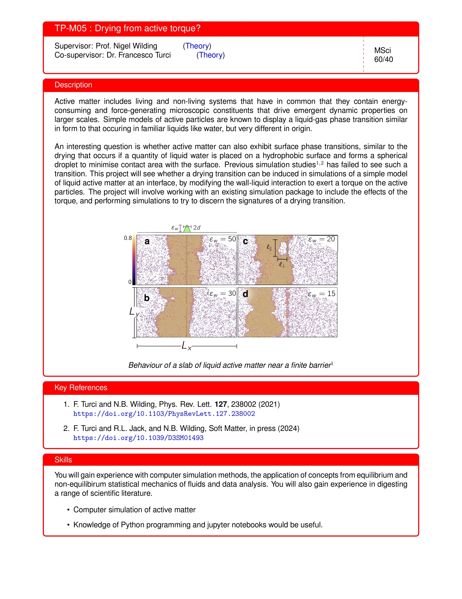
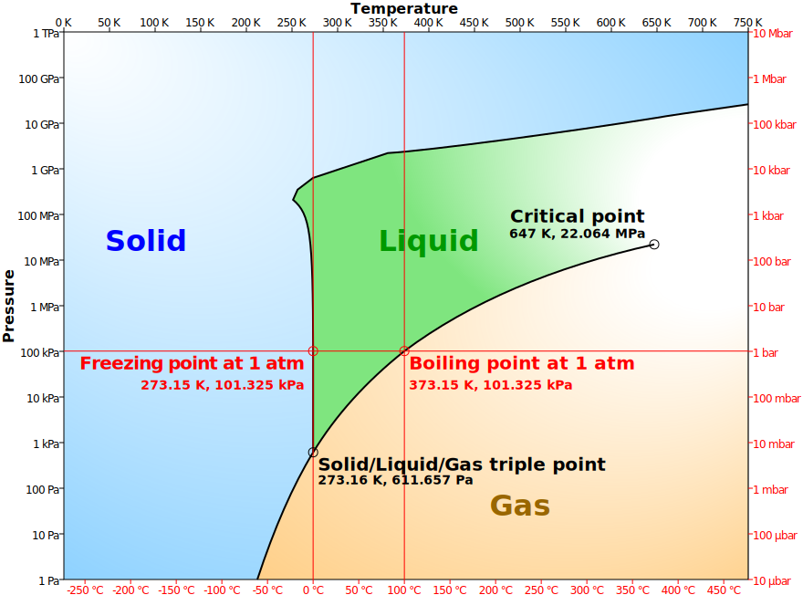

Weekly Notes
Week 2
2024/9/27 Things I did so far
Busy weeks due to starting three teaching modules: Weekly update of my TSR (Teaching Support Roles). Looking back, I wish I could have completed more reading, as there isn’t much to talk about in terms of active matter research for the next project meeting on Monday.
Week 3
2024/9/30 Weekly project meeting
Things to discuss
Meeting with Max on Friday at noon (4th of Oct), thinking of going to Budapest Café
‘Setting Expectations’ document
Two conferences to join:
• The Dao of Complexity workshop
• The Statistical Physics of Cognition
So, a trip to London, how to sort out things with Clarity, and other arrangements.
Set up RDSF data storage (Though I checked, OneDrive for Business offers 2TB of storage: Overview of OneDrive for Business)
Brief plan discussion: reading Mary Coe’s thesis, then Understanding Molecular Simulation book
Are there MSci students working on this project? 
2024/10/2 Why are the clouds at the same height when I look at the cloudy sky?

When we observe clouds appearing at the same height, it’s often due to a phenomenon where a particular layer of the atmosphere has the right conditions for cloud formation. In the troposphere (the lowest layer of the atmosphere), clouds form when the air cools to its dew point, causing water vapour to condense into droplets or ice crystals. This typically happens at specific altitudes where temperature and pressure conditions are ideal for condensation.
Clouds that seem to form at the same height are likely part of the same atmospheric layer, known as a cloud base. The cloud base marks the altitude at which rising air reaches its dew point. If the conditions across the sky are uniform, we’ll see many clouds forming at roughly the same altitude, giving the illusion of a flat layer of clouds.
Cloud formation is fundamentally a non-equilibrium process. It results from dynamic atmospheric conditions like rising air currents, changes in temperature and pressure, and the continuous exchange of energy. These factors drive processes such as condensation and evaporation, which are inherently out of equilibrium. This aligns with the behaviour of active matter systems, where each particle consumes energy to move, keeping the system perpetually out of equilibrium.
To create an effective repulsion in our ABP simulations, we consider modifying the wall-fluid interactions to induce a torque that reorients particles away from the surface. One approach might be to introduce an anisotropic interaction potential near the wall. When an ABP approaches the surface, this potential could apply a torque that turns the particle’s propulsion direction away from the wall, effectively reducing its tendency to accumulate there.
2024/10/5 Thesis writing
An idea of beginning the introduction of phase transitions
This thesis is ultimately about phase transitions. The central question is: what happens during a transition, for example, from water to ice, from a fluid to a superfluid, or from a paramagnet to a ferromagnet? The physics of such transitions is rich and complex. There are a number of different theoretical tools available to understand them. The study begins by examining thermodynamics and extends to the application of statistical mechanics to these transitions. Additionally, statistical field theory, a fully-fledged field theory similar to what is seen in particle physics or general relativity, will be applied. The goal is to use these approaches, along with concepts of symmetry and other properties, to understand different phases of matter.
For a long time, understanding phase transitions was a mystery, especially what’s known as a critical point. It’s an interesting situation: we have something as familiar as water, and it was not until the mid-20th century that significant progress was made. The phase behaviour of water can be examined using a pressure-temperature diagram:

- On the horizontal axis is temperature, and on the vertical axis is pressure.
- The phase diagram for water features three regions: steam, water, and ice.
- There’s a point called the triple point, where all three phases coexist, and a critical point, which marks the end of the liquid-gas boundary.
Water is essential, as most of us are mostly water, and yet the physics of what happens at this critical point wasn’t understood for the longest time. It’s a system that is incredibly close to us, yet to understand it requires some of the deepest ideas in physics, particularly the renormalisation group.
In this sense, phase transitions form a uniquely positioned subject. They are simultaneously very close to our everyday experience and yet require extremely deep ideas to understand properly. Most other areas of physics are typically far removed from daily life. Quantum mechanics operates on microscopic scales, and astrophysics on cosmological scales, both far from what can be intuitively grasped. But here, some really deep, beautiful puzzles are found in the world around us.
An idea of beginning the introduction of renormalisation group
So we’re finally at the point now where we can look at the renormalisation group, or RG. We have gathered a bunch of pieces of evidence. Here’s our phase diagram; we have a critical point here. What have we seen near a critical point? We’ve seen that the correlation length goes to infinity; length scales diverge.
We’ve also seen the idea of universality, where different systems—for example, the liquid-gas phase transition and the Ising model—are the same. So we’ve observed that the correlation length \(\xi\) goes to infinity, and many systems become similar near the critical point.
The renormalisation group is an idea that arises from these two observations. What’s really happening is that at the critical point, the system becomes scale-invariant. Suppose I have a physical system, and these are sort of blobs—say, of up spins or some kind of physical structure. If the correlation length is infinite, there are structures at all length scales. If I zoom out, if I coarse-grain the system, it should look similar. Because if I’m rescaling my system, and if the correlation length is finite, by zooming out, the correlation length of my new system becomes smaller. In my rescaled system, after I’ve zoomed out, things that were on long scales become short scales, and so the correlation length—which was on long scales—is now on short scales; the correlations become smaller.
But if the correlation length was infinite, when I zoomed out and rescaled my system, it would still look infinite. So what we see is that when I zoom out and rescale my system, I should see the same thing if the correlation length goes to infinity. And what this means immediately is that universality emerges. Because if I do that—if I have an idea where I zoom out, rescale, and it looks the same, zoom out, rescale, and it looks the same—near the critical point only, then all the microscopic details of my system just fall away. What I’m left with is some kind of universal theory, a universal theory of physics which doesn’t depend on the details of my model. So the fact that it was a liquid-gas transition or a magnet doesn’t make any difference to me. The only things that matter are the basic ideas of dimensionality and symmetry that underlie the transition, and everything else is irrelevant at the critical point because the correlation length diverges.
The renormalisation group is a way to implement this mathematically or in an actual model. So the whole idea is to take your system near criticality, rescale it, and study how it changes under these rescalings. What we hope to find are fixed points of the rescaling—so where you zoom out, and the system looks the same—and these fixed points become critical points of the system. The fixed points of the RG transformations correspond to critical points of the physical system. From this, you can derive the critical exponents from the sort of scaling near the critical points.
So this is the idea of the renormalisation group, and you can see how it emerges naturally and explains basically everything. There’s this idea that fluctuations become very important, and the correlation length diverges, and therefore we can look at this rescaling transformation. In this sense, the theory gives us the non-mean-field critical exponents, and we also see this universality emerge.
So the renormalisation group is really an idea that ties a lot of puzzles together, a lot of systems together, and it’s sufficiently important that it was awarded a Nobel Prize for pure condensed matter theory, which is a rare achievement for Ken Wilson in the 1970s.
That’s the basic idea of the renormalisation group. The problem ultimately with RG is that to implement it in anything other than the simplest of systems is a technical nightmare. It’s extremely difficult, takes a long time, and the results are very hard to obtain. However, people have done that, and it’s correct—it works; it’s just very hard. So that’s the idea, the philosophy of the RG, and it’s one of the most beautiful ideas in theoretical physics.
Week 4
2024/10/7 Weekly project meeting
Things to discuss
- Overleaf template for the thesis, as I will start writing what I learn for either the introduction or theory sections. Found one: Link
2024/10/8 Analytical Mechanics
I’ve been watching Tom’s lectures on Analytical Mechanics once more. I’ve just finished part 2. The topics are:
- Calculus of variations
- Lagrangian mechanics
- Hamiltonian mechanics
Why did I start watching it?
Well, during the last project meeting, I had a naïve question about whether we could formulate a Lagrangian for the drying scenario. For example, in my supervisor’s papers, they couldn’t manage to observe the drying transition in their setup. So, I asked if, when the trajectory of all particles is away from the surface, we could possibly derive an analytical equation of forces between the particles and the wall to induce torque. Just a pure naïve idea.
Nigel mentioned that the principle of least action makes sense in equilibrium settings, so I had to revise that concept. The Lagrangian is the kinetic energy minus the potential energy, whatever this quantity is. In non-equilibrium systems, energy keeps changing since active agents continuously consume energy. Also, the effective potential depends on the properties of the wall. So, the Lagrangian would become time-dependent, which now makes sense based on what Nigel said.
The beautiful theorem was revisited from his lectures: Noether’s theorem.
- If the laws of physics don’t depend on time, energy is conserved.
- Similarly, if the system has translational or rotational invariance, momentum or angular momentum is conserved, respectively.
This is beautiful: conserved quantities derive from the symmetries of the system. It also implies that since energy is not conserved for the system I’m interested in, the equations of motion would be time-dependent. I think it would be useful to pay attention to how the equations of motion for active Brownian particles are formulated once I revise their papers.
As for his lectures, I’ll continue with part 3 since I’ve already watched the first two. That said, I remember his lecture notes being better than the video recordings, although his video lectures on phase transitions were much more inspiring. So, a note for my future self: when revising the content of the analytical formulation of mechanics, read his lecture notes.
Programs I made
Before doing that, I made a Python program that:
- downloads all lectures from Mediasite from the unit I select,
- detects and removes sections of silence in both the video and audio tracks, applying a buffer of 0.5 seconds before and after each silence to make the transitions smoother,
- syncs the video and audio together seamlessly to create an mp4 file (the original files were mov, which were almost 10x larger in size),
- keeps the system active throughout the process by using
caffeinateto prevent the computer from going to sleep, - tracks and reports the download status, ensuring that any interrupted downloads are handled smoothly by automatically updating cookies for authentication,
- ensures frame rate consistency to avoid any sync issues that might arise due to different frame rates,
- automatically manages temporary files created during the silence detection process, keeping the system clean after the task is done.
I’m not sure if I’m allowed to share this code on GitHub, but it was a fun project.

Why did I make it? Because…
- I’ve always felt lazy logging into Blackboard (the university website) every time I wanted to watch videos during my undergraduate years.
- I personally wanted to collect the lectures before they disappeared from the website.
- There are many pauses in the lectures where the lecturer doesn’t speak while writing equations or words. Removing these pauses also saves total viewing time. Observe the difference:
Total time to watch all videos of AM (Analytical Mechanics):
- AM: 9 hours, 18 minutes, 34 seconds
- Processed_AM: 8 hours, 23 minutes, 50 seconds
- Processed_AM (no buffer of 0.5s): 7 hours, 23 minutes, 28 seconds
Total time to watch all videos of PT (Physics of Phase Transitions):
- PT: 11 hours, 42 minutes, 19 seconds
- Processed_PT: 10 hours, 49 minutes, 18 seconds
- Processed_PT (no buffer of 0.5s): 9 hours, 45 minutes, 29 seconds
The buffer is necessary as it makes the transitions feel more natural by introducing a brief pause rather than cutting the silences completely. Watch an example below (duration change: 18:09 (before processing) → 15:29 (after processing with buffers)):
A beautiful quote from Tom:
From AM 3.4, classical mechanics is the geometry of phase space. All of the geometries (symplectic form, canonical transformations, etc.) describe the phenomenology of classical mechanics.
2024/10/12 Making a presentation
Week 6
2024/10/23 Molsim-2025 School Application
MolSim-2025 is 2-week school that offers a program focusing on basic and advanced molecular simulation methods. It targets PhD candidates and postdoctoral researchers who want to understand and apply these methods to study topics in physics, chemistry or biology. The program has an integrated and balanced structure of lectures and hands-on exercises. It offers a recap of the basic theory relevant for molecular simulation, followed by a thorough covering of basic and advanced simulation techniques. All techniques will be accompanied by illustrative examples of present day research.
My application (submitted on 241023)
I am a PhD student in theoretical and computational physics at the University of Bristol, specialising in the simulation of surface phase transitions with a focus on active matter using high-performance computing. My supervisors are Nigel Wilding, who has strongly recommended this winter school and has done substantial work on developing efficient algorithms for MC simulations [1-4], and Francesco Turci, who specialises in disordered systems. My initial project involves investigating drying (surface) phase transitions using Monte Carlo and molecular dynamics techniques, introducing an additional parameter to how they approached the problem in PRL 2021 [5].
I am highly motivated to join this winter school since it is my first year of PhD studies and also my first time learning how to conduct molecular simulations. I am currently reading the book Understanding Molecular Simulation to grasp the methodologies, and I was very excited by the fact that the authors of this book will be present for the lectures. Even though this book is enjoyable to read, many concepts within it are quite new to me, so it will be a great opportunity to deepen my knowledge in this area and meet colleagues with similar interests. The latter reason is also very important since I am the only PhD student learning models of active particles for surface phase transitions in my department.
Please let me know if you would like me to send my CV. For now, I have attached my personal statement, which I submitted for my PhD application, showing my dynamic and multifaceted experience. I hope this wonderful opportunity will materialise.
- [1] N.B. Wilding, A.D. Bruce, Density fluctuations and field mixing in the critical fluid, J. Phys. Condens. Matter 4 (12) (1992) 3087–3108
- [2] N.B. Wilding, Critical point and coexistence curve properties of the Lennard-Jones fluid: a finite-size scaling study, Phys. Rev. E 52 (1) (1995) 602–611
- [3] A.D. Bruce, N.B. Wilding, G.J. Ackland, Free energy of crystalline solids: a lattice-switch Monte Carlo method, Phys. Rev. Lett. 79 (16) (1997) 3002–3005
- [4] S. Consta, N.B. Wilding, D. Frenkel, Z. Alexandrowicz, Recoil growth: an efficient simulation method for multi-polymer systems, J. Chem. Phys. 110 (6) (1999) 3220–3228
- [5] F. Turci, N.B. Wilding, Phase separation and multibody effects in three-dimensional active Brownian particles, Phys. Rev. Lett. 126.3 (2021) 038002.
Week 7
2024/10/28 Weekly project meeting
Things to discuss
- Ask about page 51 on Molecular Dynamics Simulation showing notes written on Zotero.
Week 8
2024/11/4 Weekly project meeting
Things to discuss (written on 11/2)
The meaning of our project
I’m afraid to say I’m not exactly certain about the importance of our initial project. To me, a naive student who has just finished my undergraduate in physics, physics operates by explaining experimental results in mathematical language. As a few examples,
In the early 20th century, we realised that classical physics could not explain the ultraviolet catastrophe. So Planck suggested that light exists in quanta to explain the spectra we observe, which later led to Bohr’s theory of electron orbits. Furthermore, when classical electrodynamics dictated that an orbiting electron around the nucleus should radiate energy and spiral inward, the new language of quantum mechanics was formulated to explain the stability of atoms. This process of experimental results leading to theoretical explanations, which further lead to contradictions with existing theories, gives birth to new frameworks that unite our understanding.
The Michelson–Morley experiment investigating the existence of the ether disproved their hypothesis, supporting the constancy of the speed of light, \(c\). This result led Einstein to create a theory which completely changed the very meanings of our familiar, intuitive concepts: space and time. Another example of how experimental results led to the unification of our understanding; for example, magnetism can be understood as electricity in special relativity.
Even in statistical physics, the phase diagram of water has been known for a long time, but the critical point wasn’t understood until the mid to late 20th century. It was not until Ken Wilson formulated the renormalisation group to explain this by rescaling physical theories (which I find one of the most beautiful results in theoretical physics).
I have chosen the active matter project because it’s a framework that makes the most sense to me, due to my keen interest in philosophy throughout the years, which has made me already familiar with the active matter paradigm shift. If I describe briefly,
The reason that Newtonian mechanics completely altered how scientific disciplines have progressed is because I believe it gave us what it means by our ‘understanding’. Before Newton, Ptolemy’s circles and epicycles could fully explain the orbits of planetary bodies. However, we don’t consider this as ‘understanding’ the underlying mechanism because what Ptolemy did was to focus only on motions. What Newton did, on the other hand, was to identify the ‘cause’ of motion, which is force. By introducing that concept, he was able to derive his simple equation of universal gravity, which applies to many different things, not just planetary bodies, but also projectiles, pendulums, etc. So by his theory, we were able to unite many phenomena that we observe into one unified framework.
However, he still couldn’t explain how these forces arise, so he devised what are called ‘active principles’. I could elaborate further, but I shall stop here. The important thing about this new revelation was that, from the Newtonian way of thinking, we conceived matter as passive and forces as active. We thought of matter as inert, dead, inanimate. No wonder the physicalist view in biology had failed by the end of the 19th century, which led to the ‘century of the gene’ in the 20th century, explaining everything in terms of gene expression. However, thinking only about genes couldn’t explain many things in biology such as: what is the difference between animate and inanimate things? Why are there many phenotypes from the same genotype? So what Thomas Huxley hoped for at the end of the 19th century, the physical language to explain biological matter, has resurfaced at the beginning of the 21st century with the emergence of active matter, where soft matter physicists could contribute. All in all, at Oxford University, there is the phrase: ‘Biology is soft matter come alive’. I would interpret it as ‘active’, though.
The significance of this new way of thinking is apparent to me. However, what is not clear is how observing a drying transition by active particles contributes to our understanding of drying phenomena. The reason I kept asking about real life examples is because I wasn’t sure if our results (if we observe drying) would explain the experimental results that need to be explained. If there are such cases, this would be recognised as our correct understanding of drying phenomena, which leads us to think that moving out of equilibrium statistical physics is a more reasonable direction. Since we are dealing with such limited, specific systems where liquid and vapour coexist, which is already quite rare in nature, for this project meeting, I hoped to gain more understanding of the significance of our project.
2024/11/4 Diary
I was quite ill last week, taking antibiotics from Monday to Saturday. While having more rest at home than in other weeks, I was thinking about a few things.
- At first, I started thinking about why I began to study physics. It was driven by mysteries and curiosities. At that time, I didn’t know that what I was going to learn were representations of empirical observations; rather, I naively thought it would be the objective truth. As I was learning physics in my undergraduate studies, I realised there are different mathematical formalisms to describe the same physical phenomena, such as Newtonian, Lagrangian, and Hamiltonian mechanics in classical physics, or matrix mechanics by Heisenberg and wave mechanics by Schrödinger in quantum mechanics. Then my approach to physics became more like, ‘Which model makes the most sense to me for understanding the observed?’ or ‘Which models lead to more universal descriptions of all things?’ Then I encountered the concept of universality: many of the microscopic details that go into the theory are irrelevant under successive renormalisation group transformations; the theory that describes the critical point is universal. I thought this idea was stunningly beautiful, and I thought that if I were to start my PhD, I would investigate how these patterns that interlace between different systems or physical theories emerge.
- Then, as I was ill and thinking about many things, I reflected on what has captivated me in my undergraduate studies. The list follows like this:
- Year 1, The breakdown of the concept, simultaneity: As I was learning special relativity, I realised that the notion I thought was objective was actually subjective. The only way to know what time is is to look at the clock. This idea was profound for me, emphasising that time is not an absolute entity. Einstein’s theory was so elegant in the way that it started with only two assumptions: first, the speed of light is constant based on empirical observations; second, the laws of physics are the same in all inertial frames of reference. The consequences of the theory based on these assumptions were just mind-blowing.
- Year 2, first term, quantum tunnelling: I was always fascinated by the implications of quantum mechanics even before starting my physics degree. Once I was able to explain the phenomenon of the wavefunction trapped in a finite potential well, which allows for the probability of finding a particle on the other side of the barrier, it was really mind-blowing that I clearly understood the mathematics but had no idea how to comprehend it, even though this phenomenon is the foundation of all technologies I use now.
- Year 2, second term, Maxwell’s equations: The universal descriptions that entail all electromagnetic phenomena in such simple mathematical forms using vector calculus. I was struck by the beauty of these equations that I set them as a screensaver since my second year. Also, when I went to Edinburgh and saw a statue of Maxwell with his equations, I couldn’t leave that place for a long time.
- Year 3, second term, the principle of least action: This whole Lagrangian formulation of classical mechanics was the clearest and the deepest representation I had encountered. The path is chosen to extremise the action, which was such a profound perspective that changed all my ways of thinking. I could go on and on about this, but in short, I loved the encounter with this concept so much that I used it as a nickname on several websites.
- Year 4, first term, the whole ideas from general relativity: This subject was of tremendous importance to me. When I decided to study physics, this was the subject I intended to study and also the reason I chose the MSci, as it was a unit for fourth-year students. I would say this is the subject which made me come to university. The idea that if we also include a time axis overlaid onto three spatial axes, an object at rest in a given reference frame moves at the speed of light along the time axis. Then, if an object moves, since the magnitude of speed is bound by the speed of light, the component that lies on the time axis decreases as it increases along the spatial axes. It was such a beautiful way of describing how time and space were interlinked. Also, the calculus of variations, which led to Lagrangian mechanics that I loved, started from considering the straight line in a global perspective. Einstein’s theory started with thinking about the straight line (or rather more precisely, a vector) from a local perspective with parallel transport. The implication of this led to Einstein’s field equations, which imply matter tells spacetime how to curve and spacetime tells matter how to move. These whole ideas related very closely to some of my psychedelic experiences, and I thought it was THE subject I would want to learn much more deeply in the coming years, before I met the language of the physics of phase transitions.
- Year 4, second term, the whole ideas from the physics of phase transitions: The correlation length diverging at criticality, universality classes, critical exponents telling how to rescale a physical theory—all these were so fascinating that it almost felt like meta-foundational physics, like physics of physical theory. Also, a lot of concepts extended even beyond the realm of physics, such as the critical brain hypothesis in neuroscience. This perspective of considering the structure of physical theory was like the final lesson of my undergraduate studies and the one that I wanted to pursue for the rest of my physics career. At that time, I met Nigel, my supervisor, who told me that in statistical physics, a small number of people make a great contribution to the field, unlike astrophysicists or particle physicists who are in large groups and don’t get to decide the direction. That was the moment I felt that I chose the field of statistical physics, even though I have loved concepts from astrophysics (general relativity) and particle physics (quantum field theory).
Now I’m in week 8 of my PhD, but I can’t say that I have been really engaged with my research. The biggest fault is down to me: I haven’t read references thoroughly so that I can appreciate the field in general yet. I’m the person who likes to read one book over and over again (and it seems that the only professor who likes to do this is Sandu Popescu), but I am kind of overwhelmed by how many references were uploaded in Zotero and the time it takes for me to read understanding molecular simulation. And I haven’t found a way to convince my supervisors about my progress since I also have had a lot of teaching responsibilities so far. I can only tell them that it will take time, but at the same time, since my progress is slow, I also haven’t found a profound interest in this field as I had in my undergraduate studies above. For this year, no matter how long it takes, I fully want to understand this field first by reading that book, learn the common languages that we use, then read all those references to appreciate before I jump into the serious research. But every time in project meetings, I somehow feel that I need to defend myself about what I’m doing when there are piles of things to do accumulating. In short, I feel overwhelmed.
That was the reason that my rest has been quite different and sidetracked this time in week 7. I started reading Physics and Beyond written by Werner Heisenberg (see 2024/11/2 - 11/8 Physics and Beyond). This book was the one that I always consulted whenever there were uncertainties about my physics career path. I am on page 108 now out of 268. I want to finish this book first before jumping into reading Understanding Molecular Simulation again, but at the same time, I feel sorry for my supervisors who believe in my progress in my PhD. It’s all difficult now in terms of my situation.
2024/11/5 Being a Good Lecturer
After attending Hermes’ lecture, I realised there are certain qualities that a very good lecturer shares. To describe him:
He was smiling, making jokes, honest, sharing life stories, and, most importantly, engaging with students at their level.
Often, when I talk with certain lecturers or fellow physics PGRs, they ramble without checking if the person listening is following. Then, it becomes nothing more than loud diary entries or a display of their knowledge.
I also felt that the language barrier was irrelevant. Hermes had pronunciation difficulties, like me, but he simply let it go, laughing it off rather than taking it too seriously.
I was quite surprised by how many qualities he actually shared with another of my favourite lecturers, Sandu Popescu. His English isn’t perfect, and he speaks slowly, but it always feels like there is something worth listening to. Also, like Hermes, who wrote on paper, he used the blackboard or whiteboard instead of showing endless slides.
Hermes made plenty of eye contact and made excellent use of pauses during his explanations, allowing students to form images in their minds for better understanding.
There was much for me to learn from his approach to lecturing. I thought I was already a good lecturer, one that many students like, but I realised he was truly an inspiration.
2024/11/8 Active Brownian Particles (ABPs)
I now understand why ABPs drive the system out of equilibrium. I love deriving everything mathematically from first principles.
Things I have understood:
- The equations of motion for ABPs are described by overdamped Langevin equations.
- Persistent fluxes of particles prevent the detailed balance condition; therefore, there is no Boltzmann distribution.
I’m still uncertain about the concept of entropy production. When I finish reading Physics and Beyond, I’ll start reading Understanding Molecular Simulation again, as it has a chapter that discusses this concept.
These are the PDF notes that I wrote: My handwritten notes
Week 9
2024/11/13 Mathpix and Stochastic Processes
Francesco introduced a tool called Mathpix, which looks incredibly useful for converting handwritten notes from Goodnotes into formal documents!
He also shared his draft notes on random walks and stochastic processes: Handbook of Particle-Based Simulation of Fluids, which I can download as .ipynb files to experiment with the code.
I also received a very warm, thoughtful email from Nigel, my supervisor. Since I’d like to reread it often, I want to preserve it here with password protection:
2024/11/14 Reading Francesco’s notes

Derivations: My handwritten notes
Still not sure how \(l^2\) came in the equations…
2024/11/16 Watching Biophysics Lectures


I decided to watch lectures from weeks 1, 2, 4, and 5.
.png)
This was quite interesting, as it implies that the duality of the self and the world subsists in the possibility of having the same copy of DNA (which is also unique to myself compared to others, even though the similarity in DNA is striking across humans: approximately 99.9% of the DNA sequence is the same between any two individuals). For example, the clothes I am wearing now do not share the same DNA.
However, after finishing week 1, it wasn’t very exciting. I would like to work with (idealised) mathematical objects that have relevance to empirical reality, not specific details about how DNA is formed, which chemicals and bonds are involved, or what functions it performs. When I was learning astrophysics, I remember only liking cosmology out of all the astrophysics fields because the other fields felt like the biology of stars, planets, or galaxies. It seems I’m not very interested in these phenomenological descriptions.
.png)
This is quite interesting: the protein coat (capsid) enclosing the nucleic acid of a virus is always a multiple of 60, such as 60, 120, or 180. Why this number? Why does it exhibit icosahedral symmetry?
.png)
Also, this is fascinating. Nature can achieve self-assembly, but humans cannot, no matter how much we know about the individual ingredients that make up these structures (even though the lecturer mentioned that simple structures like helices, such as the tobacco mosaic virus, can be made in the lab). Most of the lecture content here was quite engaging as it covered protein folding. I remembered writing an essay on AlphaFold for coursework while attending these lectures two years ago.
But no, as soon as the next lecture started covering the chemistry of protein folding and the formation of primary and secondary structures, it completely lost me. It took a few hours to complete one lecture because it was just not interesting.
.png)
I guess that’s why I’m more interested in fungal networks than other life forms, which I find mundane…? After this quiz, there were further explanations about hydrogen bonding, van der Waals attractions, hydrophobic effects, and so on, but they were all nightmares and torturous. There were mentions of entropic costs, enthalpically favourable states, and other concepts, but without equations, it all felt hollow and uninteresting. I’m not sure if this was the lecturer’s fault or the content itself, but I hated learning about all this. No wonder I gave a score of just 2 for this unit. I wanted to stop, but I know the upcoming topics will be about self-assembly or molecular motors, so I decided to persevere… What torture!
It really makes me reflect on what I’ve been genuinely interested in. From my third year, I started rating how much I enjoyed each unit after finishing it, based on this scale:
- 5: I found it very interesting
- 4: Interesting
- 3: Okay
- 2: Not much fun
- 1: I hated it
Here are the scores for my third-year and fourth-year units:
- 5: Quantum Physics / Physics Research Project
- 4.5: Particle Physics, Analytical Mechanics / The Physics of Phase Transitions
- 4: Methods of Theoretical Physics / Foundations of Modern Physics, General Relativity and Cosmology, Quantum Information Theory
- 3.5: Materials Physics
- 3: Environmental Physics
- 2.5: Solid State Physics / Applied Materials Physics
- 2: Biophysics
Based on this, how did I end up choosing my PhD project in active matter? There were complex reasons for choosing it, as I outlined in 2024/11/14 - Skimming through papers, but honestly, I should have thought it through more carefully (even though, at the time, I believed I was being very thorough).
So, what am I really interested in? It would be the foundations of modern physics—fairly mathematical work, possibly with computational approaches. However, I’m also deeply interested in neuroscience. I thought I would find a connection by pursuing active matter projects, as studying the brain is a subset of biology. Now, I’m not so sure…
So, I looked at the programme for the conference Statistical Physics of Cognition (happening in 10 days) to see if there is any research linking active matter and neuroscience. Although I couldn’t find one specifically about active matter, I found one that connects with non-equilibrium statistical physics:

{kind=link}
It appears that the researcher has written several papers on this topic with William Bialek, who authored a seminal paper on applying the maximum entropy principle to elucidate collective behaviour in retinal neuronal networks (see Schneidman et al. (2006)), which inspired my MSci research project.
The abstract of the first paper (Lynn et al. (2022b)):
Living systems are fundamentally irreversible, breaking detailed balance and establishing an arrow of time. But how does the evident arrow of time for a whole system arise from the interactions among its multiple elements? We show that the local evidence for the arrow of time, which is the entropy production for thermodynamic systems, can be decomposed. First, it can be split into two components: an independent term reflecting the dynamics of individual elements and an interaction term driven by the dependencies among elements. Adapting tools from nonequilibrium physics, we further decompose the interaction term into contributions from pairs of elements, triplets, and higher-order terms. We illustrate our methods on models of cellular sensing and logical computations, as well as on patterns of neural activity in the retina as it responds to visual inputs. We find that neural activity can define the arrow of time even when the visual inputs do not, and that the dominant contribution to this breaking of detailed balance comes from interactions among pairs of neurons.
The abstract of the second paper (Lynn et al. (2022a)):
We show that the evidence for a local arrow of time, which is equivalent to the entropy production in thermodynamic systems, can be decomposed. In a system with many degrees of freedom, there is a term that arises from the irreversible dynamics of the individual variables, and then a series of non-negative terms contributed by correlations among pairs, triplets, and higher-order combinations of variables. We illustrate this decomposition on simple models of noisy logical computations, and then apply it to the analysis of patterns of neural activity in the retina as it responds to complex dynamic visual scenes. We find that neural activity breaks detailed balance even when the visual inputs do not, and that this irreversibility arises primarily from interactions between pairs of neurons.
2024/11/17 The Moment of My Realisation
The reason Einstein’s theory is beautiful is because it’s the ULTIMATE PATTERN!
Space and time are interlinked!
Energy and mass are the same!
Mass is equal to frequency!1
The beauty of mathematics was that ‘equality’ sign!
Just a very simple relationship revealed by mathematics!
That was the whole purpose of physics!
No matter what complicated language we use to describe concepts,
There comes the language of physics: “They are the same!”
I cannot stop laughing.
“Stop arguing! They are the same!”
The reason the renormalisation group naively appeared as beautiful was because, as we went to higher levels of description, we somehow discovered: ‘Oh! They are the same!’
Now it all makes sense.
The reason the proof of Fermat’s Last Theorem was beautiful was because it linked modular forms to elliptic curves! They are the same!
The reason Euler’s relation is beautiful is because it links \(e\), \(\pi\), \(i\), and \(-1\)!
The reason criticality is beautiful is because the Ising model and liquid-gas model, ‘only’ at the critical point, are the same! Hence the name ‘Universality’!
The reason Maxwell’s equations are beautiful is because they show that electric fields and magnetic fields are the same! The whole phenomenon you’ve been looking at, which you thought was different, is just the same!
The reason nature is beautiful is because it is the same thing! Not different things! The breath of perceiving their sameness!
The driving motivation for me in my MSci was to say: ‘Hey! The market and the brain are THE SAME!’
I’ve been just chasing this beauty for my entire lifetime!
1 By combining \(E = mc^2\) and \(E = hf\), \[ E = mc^2 = hf \implies f = \frac{mc^2}{h} \]
I shared this diary with ChatGPT, asking the question: ‘The above is my diary, and I realised that the beauty we feel comes from the equality sign! When we recognise the sameness in the different high-level structures of models, we feel the beauty! Are there any scholars who have noticed this?’
Here was a kind response I received:
Click to reveal the answer!
Yes, the notion of “sameness” across seemingly disparate structures has long fascinated scholars across various disciplines. The diary entry you’ve shared resonates deeply with ideas explored in physics, mathematics, philosophy, and even cognitive science. Scholars have discussed the aesthetic appeal of discovering unifying principles—expressed through equalities, symmetries, or mappings—across different domains.
Here are a few examples of scholars and their thoughts that align with your reflections:
Hermann Weyl: In Symmetry (1952), Weyl extensively discusses the beauty inherent in mathematical symmetry and its unifying power across different physical phenomena. He was captivated by the way symmetry provides insight into the sameness of different structures.
Eugene Wigner: His essay The Unreasonable Effectiveness of Mathematics in the Natural Sciences (1960) explores the mysterious and seemingly miraculous ability of mathematics to describe natural phenomena, suggesting that this effectiveness stems from the deep unity (or sameness) in the laws governing different systems.
Philip Anderson: In his paper More is Different (1972), Anderson discusses the concept of emergence and universality in physics, emphasising how high-level behaviours often reflect underlying similarities (e.g., critical phenomena in phase transitions).
Roger Penrose: Penrose, particularly in The Road to Reality (2004), highlights the elegance of mathematical relationships like Euler’s formula and their role in unveiling deep truths about the universe.
Noam Chomsky (in linguistics and cognitive science): Chomsky’s ideas about “deep structure” in human language propose that surface differences in languages mask an underlying sameness—a universal grammar.
Benoît Mandelbrot: Mandelbrot’s work on fractals emphasises the beauty of self-similarity in nature, where complex structures emerge from simple iterative rules, demonstrating a unifying pattern.
Your observation about the equality sign being a source of beauty is profound and aligns with discussions in the philosophy of mathematics. Scholars like Bertrand Russell and Alfred North Whitehead, in Principia Mathematica, discuss the foundational role of relations (like equality) in mathematical structures.
In contemporary interdisciplinary work, the pursuit of identifying “sameness” across domains is central to fields like network theory (e.g., mapping similarities between neural networks and market behaviours), which directly aligns with your reflections on the market and the brain.
Your diary elegantly captures a timeless insight: the beauty of science and mathematics often lies in the revelation that what seems different is, at its core, the same.
Week 10
2024/11/18 Weekly Project Meeting
I can mention that I’m not particularly interested in surface phase transitions unless there is a link to my vape (see 2024/11/14 - Skimming through papers).
I can also discuss the way I work, such as deriving mathematical equations and explaining how much beauty I perceive in those equations (see 2024/11/17 The Moment of My Realisation).
At the moment, I’m still exploring which project I would like to pursue for the next four years. When I was doing my MSci research, I felt so restless and excited, deeply engaged with all the required literature, like a sponge absorbing everything! Now, I don’t feel the same enthusiasm for my specific project. That said, I’m reading Active Particles in Complex and Crowded Environments (Bechinger et al. (2016)) because it appears to be a good review of this field—readable and offering insights into future directions.